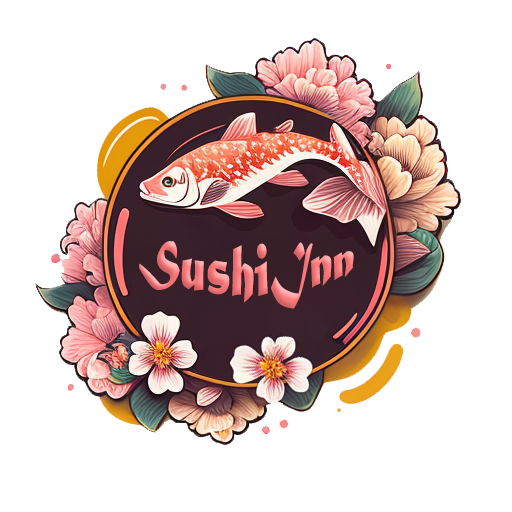

Acasa
Meniu
- Oferte
- Sushi
- Nigiri
- Sashimi
- Bento
- Salate
- Supe
- Noodles
- Extra
- Desert
- Bauturi
Despre noi

Restaurant de Sushi, SushiInn, aceasi atmosfera ca intr-un han Japonez si
acelasi gust
autentic, direct din Asia.
Bine ati venit la SushiInn, destinatia dumneavoastra pentru sushi japonez autentic. Restaurantul nostru ofera o selectie delicioasa de mancaruri traditionale si o combinatie de sushi preparat cu cele mai proaspete ingrediente. Veniti sa experimentati gustul Japoniei si al Asiei la SushiInn.
La SushiInn, suntem pasionați să aducem gustul Japoniei la masa dumneavoastră.
Restaurantul
nostru
este dedicat preparării celui mai bun sushi folosind doar cele mai proaspete ingrediente, iar
echipa
noastră de bucătari de sushi calificați se asigură că fiecare fel de mâncare este pregătit cu
grijă
și atenție la detalii.
În calitate de restaurant de sushi, ne străduim să le oferim oaspeților noștri o călătorie
culinară
captivantă prin Japonia și Asia. De la rulourile tradiționale de sushi la mâncăruri
inovatoare de
fuziune, meniul nostru este conceput pentru a vă încânta papilele gustative și a vă lăsa cu
poftă de
mai mult.
Va rog sa va uitati cu atentie la ingredientele preparatelor in caz de alergii!
Calorii Sushi
Imnul sushi
Ce este sushi?
SushiInn
 Downloadeaza sigla noastraQ&A
Intrebari frecvente!
1. Este nevoie de rezervare?
Nu, nu este nevoie de rezervare. Dar fara o rezervare nu va putem garanta un loc imediat ce ajungeti. In cazul in care restarantul este plin, va trebui sa asteptati ca o masa sa se elibereze. Asa ca va recomandam sa faceti o rezervare inainte de a veni, mai ales daca sunteti un numar mare de persoane
2. Se poate face comanda?
Da! Puteti face comenzi atat in cadrul aplicatiei, cat si in cadrul altor aplicatii de delivery.
3. Cat costa transportul?
Pentru comenzi peste 100 de lei, transportul este gratuit. Pentru comenzi mai mici se va percepe o taxa de transport de 15 lei.